Мы рассмотрим возможности программ для диагностики, контроля и мониторинга оборудования компьютера.
Они позволят узнать конфигурацию системы и характеристики установленных компонентов, а также в реальном времени
проследить за важными показателями, например, загруженностью процессора и задействованной оперативной памяти.
Их можно применять в процессе поиска оптимальных драйверов, ведь далеко не каждый пользователь знает обозначение своего оборудования.
Рассмотрим некоторые из них:
 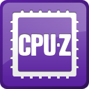 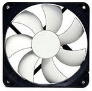 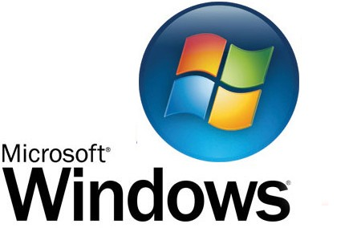
Everest и AIDA64 CPU-Z MSI Afterburner SpeedFan Errorка Возможности Windows
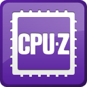 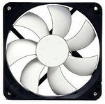 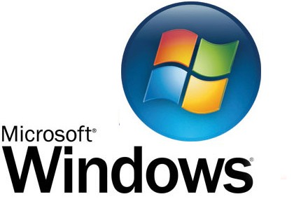
Everest и AIDA64 CPU-Z MSI Afterburner SpeedFan Errorка Возможности Windows
Наверх
Программа AIDA64 — это профессиональный инструмент, с его помощью можно диагностировать оборудование и анализировать
системную конфигурацию. Вы сможете проверить компьютер полностью, после чего программа выдаст о нем детальную информацию.


 30 дней можно пользоваться этой программой бесплатно, для дальнейшего использования нужно приобрести лицензию!
30 дней можно пользоваться этой программой бесплатно, для дальнейшего использования нужно приобрести лицензию!
 Официальный сайт разработчиков программы: https://www.chemtable.com/ru
Официальный сайт разработчиков программы: https://www.chemtable.com/ru
CPU-Z
Наверх
CPU-Z — популярная бесплатная утилита для определения информации о центральном процессоре, объёме и типе памяти,
материнской плате, операционной системе и версии DirectX.
Информация о центральном процессоре:
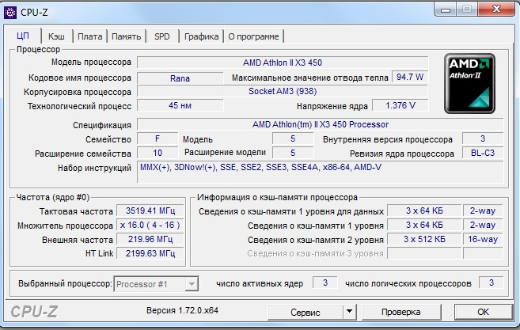
Иноформация о материнской плате:
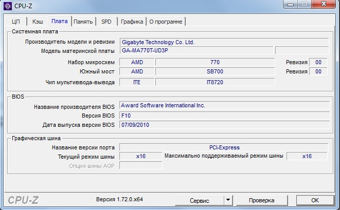
Информация об оперативной памяти:
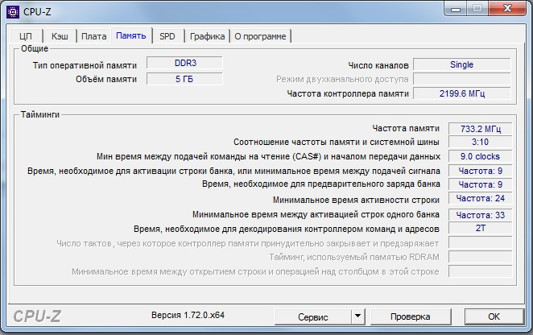
Информация о видеокарте:
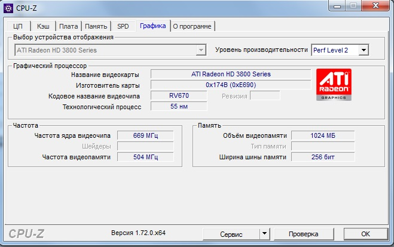
CPU-Z позволяет получать следующие сведения о вашем компьютере:
Тактовая частота процессора и его рабочая температура.
Множитель процессора.
Объём кеша всех уровней.
Чипсет и его ревизия.
Версия BIOS.
Графический интерфейс и количество линий (для PCI-Express).
Тактовая частота и тайминги.
Название видеокарты, её тип и объём видеопамяти.
Определяет разгон процессора.
Официальный сайт разработчиков программы: https://www.cpuid.com
Наверх
MSI Afterburner – это популярная бесплатная утилита, предназначенная для разгона, диагностики и расширенной настройки
видеокарт основных брендов.Благодаря своему простому и понятному пользовательскому интерфейсу программа легко
обеспечивает полный доступ к настройкам видеокарты, с помощью которых можно в несколько раз повысить ее
производительность или определить имеющиеся неисправности.
 Данная утилита привлечет внимание геймеров и оверклокеров, если требования новой игры превышают заявленные параметры
видеокарты. Программа дает возможность регулировать напряжение и тактовую частоту графического процессора, позволяя
определить оптимальное соотношение между производительностью и температурой. Помимо этого, следить за показателями этих
параметров можно на специальном аппаратном мониторе или даже вывести их на экран во время игры. MSI Afterburner способен
изменять скорость работы вентилятора по заданной кривой, которая определяет эффективность его охлаждения.
Официальный сайт разработчиков программы: https://ru.msi.com/page/afterburner
Данная утилита привлечет внимание геймеров и оверклокеров, если требования новой игры превышают заявленные параметры
видеокарты. Программа дает возможность регулировать напряжение и тактовую частоту графического процессора, позволяя
определить оптимальное соотношение между производительностью и температурой. Помимо этого, следить за показателями этих
параметров можно на специальном аппаратном мониторе или даже вывести их на экран во время игры. MSI Afterburner способен
изменять скорость работы вентилятора по заданной кривой, которая определяет эффективность его охлаждения.
Официальный сайт разработчиков программы: https://ru.msi.com/page/afterburner
Наверх
SpeedFan — бесплатная программа, предназначенная контролировать температуру и скорость вращения вентиляторов
процессора и видеокарты. Может регулировать эти параметры автоматически или вручную.
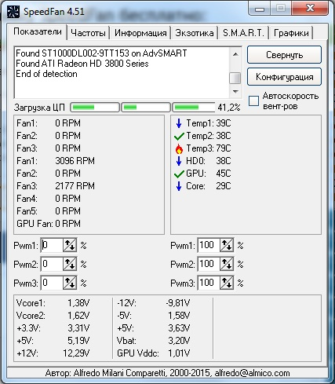
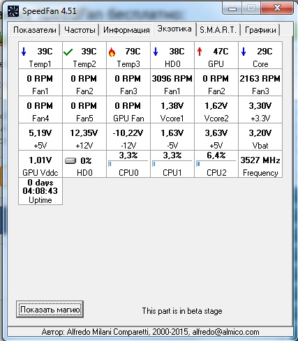
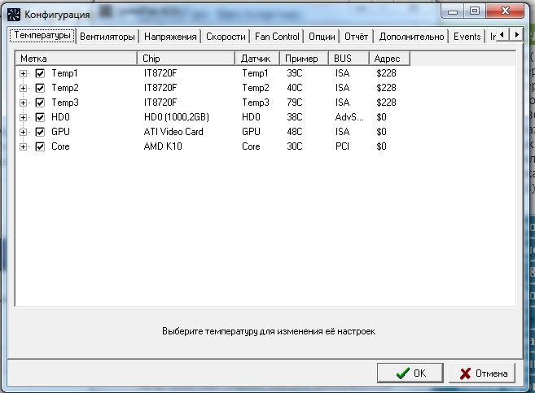
Отображаемые параметры системы в программе SpeedFan:
Температура центрального микропроцессора.
Скорость вентилятора кулера центрального микропроцессора (CPU).
График температуры центрального микропроцессора (CPU).
График скорости вентилятора кулера центрального микропроцессора.
SpeedFan ведет статистику снимаемых параметров и записывает их в log файл. Он может отображать графики
изменения температуры, напряжений и скоростей вентиляторов.
Официальный сайт разработчиков программы: https://speedfan.ru
Наверх
Errorka - бесплатная программа-справочник помогающая пользователю расшифровать шестнадцатеричные коды ошибок после появления
"синих экранов смерти"(BSOD - англ. blue screen of death), возникающих при сбоях в модулях ядра и драйверах системы.
Программа содержит расшифровку и описания ошибок, а также возможные рекомендации по их устранению.
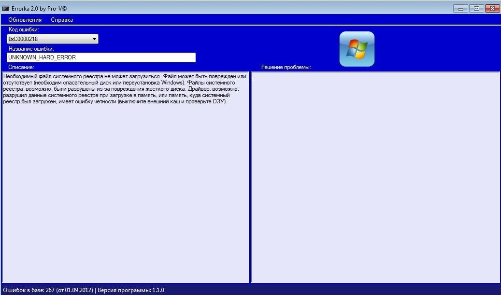
Наверх
Расскажем о возможностях самого Windows'a, как средство средства диагностики, контроля и мониторинга системы.
Первый возможность, через диспетчер задач.
Открываем его с помощью сочетаний клавиш Ctrl+Alt+Delete
В вкладке "Приложения" мы видим все открытые на данный момент приложения на нашем ПК
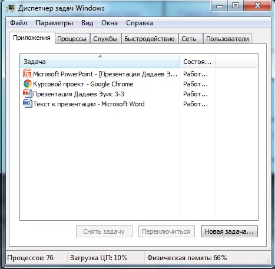
В вкладке "Быстродействие" мы видим количество ядер, на сколько загруженна в целом система, объем оперативной памяти и сколько ее используется в данный момент.
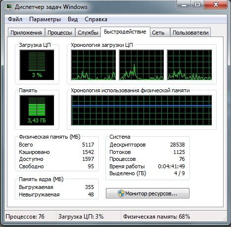
В вкладке "Процессы" мы видим все рабочие процессы.
В этой вкладке мы можем менять приоритетность процессов для более слаженной работы, если возможностях ПК не хватает(возможно этого будет достаточно)
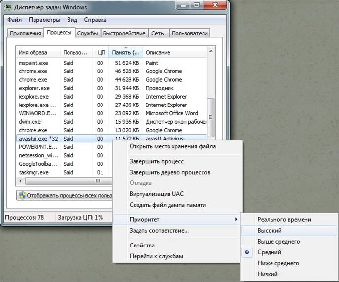
Вторая возможность, через команду "dxdiag"
Открываем поисковую строку и пишем "dxdiag" и выбираем команду
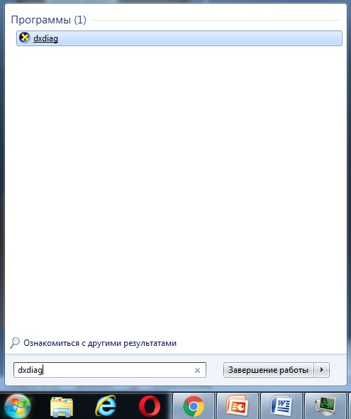
На разных вкладках этой команды мы можем найти самую простую информацию по поводу нашего компьютера.
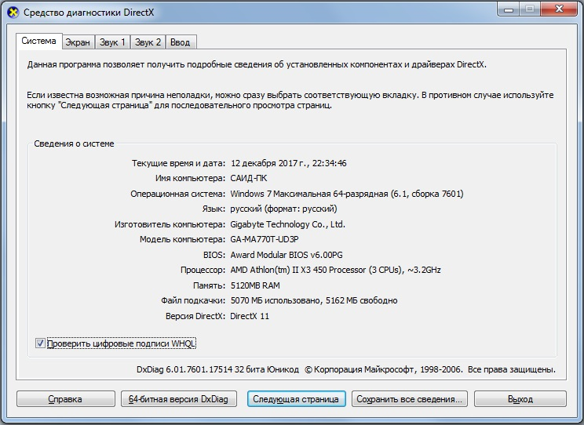
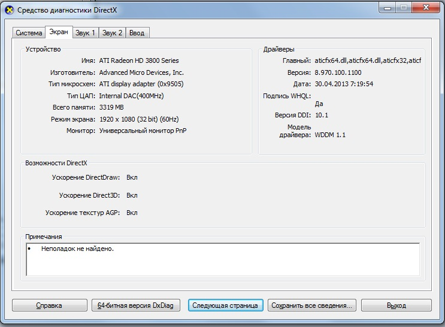
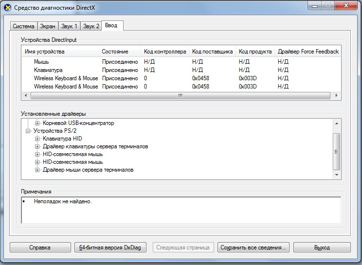